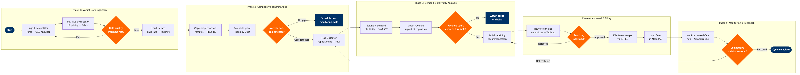

Competitive Fare Intelligence
Network Planning & Scheduling › Pricing & Fare Management · 18 L4 steps · 5 phases · 5 decision gates · Updated 2026-03-18 21:08
📊
Process Flow Diagram (BPMN)

📋
L4 Process Steps
| Step | Step Name | Role / Swim Lane | System | Input | Output | KPI | Dec? | Exc? |
|---|---|---|---|---|---|---|---|---|
Phase 1 1.1 |
Ingest Competitor Fare Data Feeds | Pricing Analyst | OAG Schedule Analyser | Scheduled OAG fare feed subscription; ATPCO tariff updates | Raw competitor fare matrix by O&D and cabin class | Feed freshness ≤4 hours from ATPCO filing event | N | N |
| 1.2 | Pull GDS Availability & Lowest Bookable Fare | Pricing Analyst | Sabre GDS | O&D list flagged for monitoring; date range parameters | Live availability snapshot with lowest bookable fare per carrier | GDS poll coverage ≥95% of monitored O&Ds per cycle | N | Y |
| 1.3 | Validate and Cleanse Incoming Fare Data | Data Engineering Analyst | AWS Redshift | Raw OAG and GDS fare extracts | Validated fare dataset with duplicate, null, and currency-normalised records | Data quality score ≥98% (nulls + duplicates < 2% of records) | N | N |
| 1.4 | Gate: Assess Data Quality Threshold | Pricing Analyst | AWS Redshift | Data quality score from validation step | Pass / Fail decision; failed batches re-queued for re-ingestion | Re-ingestion rate <5% of daily batches | Y | Y |
Phase 2 2.1 |
Map Competitor Fare Families to Own Fare Basis | Senior Pricing Analyst | PROS RM | Validated competitor fare matrix; own fare basis code library | Normalised competitor-to-own fare family crosswalk table | Crosswalk coverage ≥90% of active competitor fare codes | N | N |
| 2.2 | Calculate Competitive Price Index by O&D | Senior Pricing Analyst | PROS RM | Normalised fare crosswalk; own published fares from Amadeus Altéa PSS | Price index report: own fare as % of competitor median and lowest | Price index within ±5% of strategic target band for ≥80% of monitored O&Ds | N | N |
| 2.3 | Identify O&Ds with Material Competitive Fare Gap | Senior Pricing Analyst | PROS RM | Price index report; gap threshold parameters (e.g. >10% above market) | Shortlist of O&Ds requiring pricing review, ranked by revenue exposure | Shortlist generated within 2 hours of data ingestion cycle completion | Y | N |
Phase 3 3.1 |
Segment Demand Elasticity by O&D and Cabin | Revenue Management Analyst | Amadeus SkyCAST | O&D shortlist; historical booking curves; own and competitor load factors | Elasticity coefficient per O&D segment; price-sensitivity classification (elastic/inelastic) | Elasticity model R² ≥0.80 for top-50 revenue O&Ds | N | N |
| 3.2 | Model Revenue Impact of Fare Repositioning | Revenue Management Analyst | Amadeus Revenue Management (NRM) | Elasticity coefficients; proposed fare adjustment scenarios; current inventory by booking class | Revenue impact model: expected incremental revenue, load factor shift, and yield impact per scenario | Model run time ≤30 minutes per O&D scenario batch | N | N |
| 3.3 | Gate: Revenue Uplift Exceeds Approval Threshold | Pricing Manager | Amadeus Revenue Management (NRM) | Revenue impact model output; threshold: net yield improvement ≥1.5% or incremental revenue ≥$50K/quarter per O&D | Approved repricing candidates list; sub-threshold O&Ds shelved or monitored | Repricing candidates with confirmed positive revenue case ≥85% of submissions | Y | N |
| 3.4 | Build Fare Repositioning Recommendation Package | Senior Pricing Analyst | Tableau | Approved repricing candidates; revenue impact model; elasticity data | Recommendation deck: proposed fare levels, filing strategy, effective dates, and risk summary | Recommendation package completed within 1 business day of gate approval | N | N |
Phase 4 4.1 |
Route Recommendation to Pricing Committee | Pricing Manager | Tableau | Recommendation package; pricing committee calendar; approval authority matrix | Committee review session scheduled; recommendation circulated for pre-read | Committee review turnaround ≤2 business days from submission | N | N |
| 4.2 | Gate: Pricing Committee Approval Decision | Director of Pricing | Tableau | Recommendation package; competitive context brief | Approved fare levels and filing parameters; rejected recommendations returned for rework | First-pass approval rate ≥70% of submitted recommendations | Y | Y |
| 4.3 | File Approved Fare Changes via ATPCO | Fares Filing Analyst | ATPCO | Approved fare levels; filing parameters (fare basis, rules, Cat-25 conditions, effective date) | ATPCO filing confirmation; fare effective date set (typically T+1 or T+7 per ATPCO filing cycle) | Filing accuracy rate ≥99.5%; zero Cat-15/Cat-25 rule errors | N | Y |
| 4.4 | Load and Validate Fares in Altéa PSS | Fares Filing Analyst | Amadeus Altéa PSS | ATPCO-filed fare data; Altéa fare loader configuration | Fares active in PSS; booking-flow validation completed across all selling channels | Fare loading SLA ≤2 hours post-ATPCO effective date; booking-flow validation pass rate 100% | N | Y |
Phase 5 5.1 |
Monitor Post-Change Booked-Fare Mix | Revenue Management Analyst | Amadeus Revenue Management (NRM) | Newly-loaded fares; booking velocity by class; competitor availability signals | Post-change performance dashboard: booked yield vs. target, load factor by class, competitor sell-down rate | Monitoring dashboard refreshed every 4 hours; booked yield vs. target tracked from day 1 post-filing | N | N |
| 5.2 | Gate: Evaluate Competitive Position Restoration | Pricing Manager | PROS RM | Post-change price index; booked yield trend; competitor response actions detected | Position restored: cycle closed. Position not restored: O&D re-entered into repricing queue | Target: competitive price index within ±5% of strategic band within 14 days of fare change effective date | Y | N |
| 5.3 | Publish Intelligence Report and Close Cycle | Senior Pricing Analyst | Tableau | Full cycle data: gap detected, recommendation, approval, filing, post-change outcome | Competitive fare intelligence cycle report; lessons-learned log; updated monitoring watch-list | Cycle report published within 5 business days of position-restored confirmation | N | N |
📋